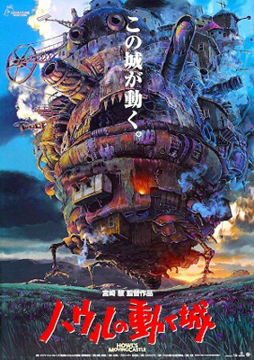
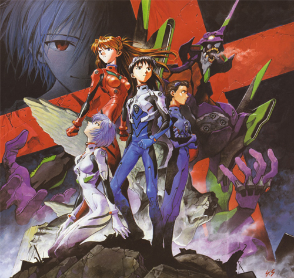
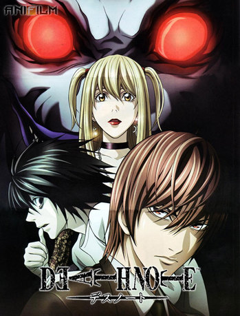

Ходячий замок
Действие фильма происходит в параллельном мире Европы конца XIX-го века, где магия идёт рука об руку с развитием технологий. Скромная жизнь шляпницы Софи полностью изменяется, когда в окрестностях её города появляется ходячий замок таинственного волшебника Хаула, известного своими «похищениями» девичьих сердец. Спасённая этим голубоглазым юношей от приставаний двух военных, она влюбляется в него. Однако волнующая прогулка с ним обходится юной шляпнице её красотой и молодостью, отнятыми колдовством ревнивой Ведьмы Пустоши. Это событие заставляет Софи покинуть родной дом и в отчаянии отправиться в Дикую Пустошь, которая пользуется дурной славой, чтобы снять с себя проклятие. По дороге ей попадается огородное пугало — Пугало-Репка, которое дарит Софи трость и помогает попасть в странное сооружение — замок Хаула. «Бабушка» Софи, не спрашивая разрешения хозяина, сама себя назначает уборщицей этого странного гигантского мобильного дома на стальных «курьих ножках». Со временем она обретает в замке семью, хоть и немного странную. В замке живут: огненный демон — Кальцифер, ученик Хаула — Маркл, а также сам Хаул — могущественный юный волшебник и хозяин замка. Софи желает снять проклятие Ведьмы Пустоши, но даже сама ведьма, наложившая чары, не может этого сделать. Также выясняется, что заклятия лежат и на самом Хауле, и на Кальцифере, и на Пугале-Репке, и даже на Ведьме Пустоши. Чтобы разгадать тайны проклятий и снять их, героям приходится пройти через множество испытаний и приключений.
Евангелион (Cинсэйки Эвангэрион / Neon Genesis Evangelion / NGE / Evangelion) — аниме-сериал, поставленный в 1995 году Хидэаки Анно по собственному сценарию на студии Gainax. Действие происходит в 2015 году, через четырнадцать лет после катастрофического Второго удара, причиной которого, как было сообщено, стало падение метеорита, и который уничтожил две трети населения Земли и отклонил земную ось. Как только человечество закончило ликвидацию последствий бедствия, Токио-3 подвергся атакам странных монстров, называемых Ангелами. Обычное вооружение бесполезно против Ангелов, и единственной защитой оказываются биомеханические машины, созданные военизированной организацией NERV — Евангелионы (Евы).
Главный герой аниме, Лайт Ягами, является лучшим школьником в Японии и сыном полицейского. Однажды, когда одному из богов смерти по имени Рюк стало скучно, он решил бросить одну из своих тетрадей смерти в мир людей. Тетрадь смерти является смертельным оружием, позволяющим убить любого человека путём записи в неё его имени (при этом пишущий должен представить лицо жертвы). По дороге из школы Лайт находит лежащую на земле тетрадь и решает проверить её работоспособность. Придя домой, он в соответствии с правилами вписал имя преступника, которого в то время показывали по телевидению. На удивление Лайта, преступник действительно умер от сердечного приступа через сорок секунд. Удостоверившись в работоспособности тетради смерти, он решает построить правовое общество, лишая жизни всех преступников, о которых упоминают средства массовой информации. Через некоторое время Рюк является Лайту и раскрывает свои мотивы. Рюк никогда не говорил Лайту, что является его другом или соратником, из чего следует, что он не помогает ему в достижении своих задач.